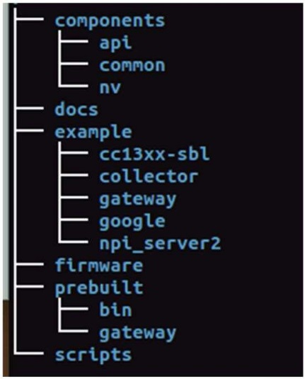

SDK Description¶
Note
- The default SDK Installation directory is: ${HOME}/ti/simplelink/ti15.4stack-2.xx.xx.xx. References to the ${SDK_ROOT} in this document refer to this directory location.
- The numbering convention is: Major, Minor, Patch, BuildID The Linux Build ID is independent of the Embedded SDK Build ID and can be a different number.
Figure 3. shows the Linux SDK is divided into several directories.

Figure 3. TI 15.4-Stack Linux® SDK Out-of-Box Directory Structure
Figure 3. shows the ${SDK_ROOT} directory structure under your TI 15.4-Stack install directory. A high-level description of the contents in each folder follows:
- components: contains the following libraries:
- common — Simple runtime OS features, File I/O, and the stream interface
- nv — Emulates the nonvolatile memory, as used in an embedded device
- api — The API MAC and MT message (Msg) interface for the embedded network processor
- docs: Various documents such as the Users Guide, Quick Start Guide, and the TI 15.4-Stack CoProcessor Interface Guide
- example: Example applications
- cc13xx-sbl — Flash update utility for the CC13xx/CC26x2
- collector — Example application that demonstrates starting up the network, allowing network devices to join the network, collecting data from remote sensors
- gateway — A Node.js™ based application that creates a local Web server and presents network information and sensor data through a Web application
- npi_server2 — A socket and packet interface to the embedded CoProcessor
- google — Contains a makefile that can download, build, and install the Google protobuf compiler and the protobuf-c extension on the Linux host machine
- firmware: Prebuilt hex files for the CC13xx/CC26x2 TI 15.4-Stack CoProcessor, Collector, and Sensor Applications
- prebuilt: Prebuilt Linux x86_v64 and BeagleBone Black (BBB) binaries for the example applications, scripts to quickly run the out-of- box example applications
- scripts: Contains makefile fragments used to compile and link example applications